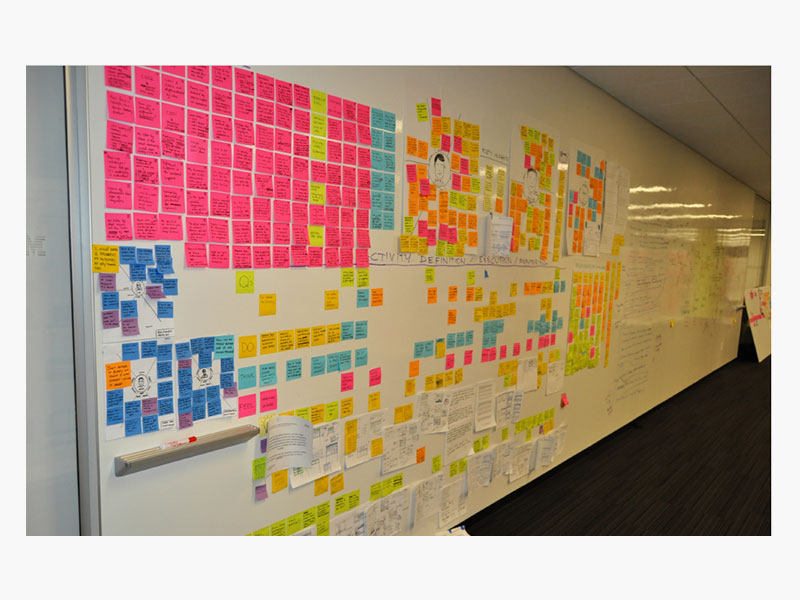
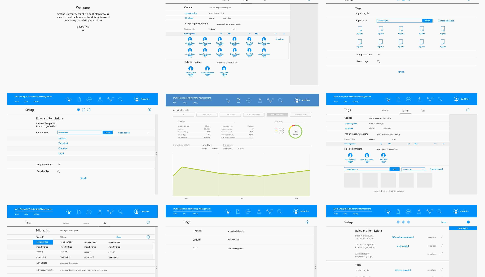
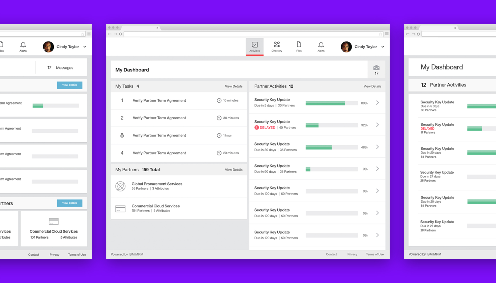
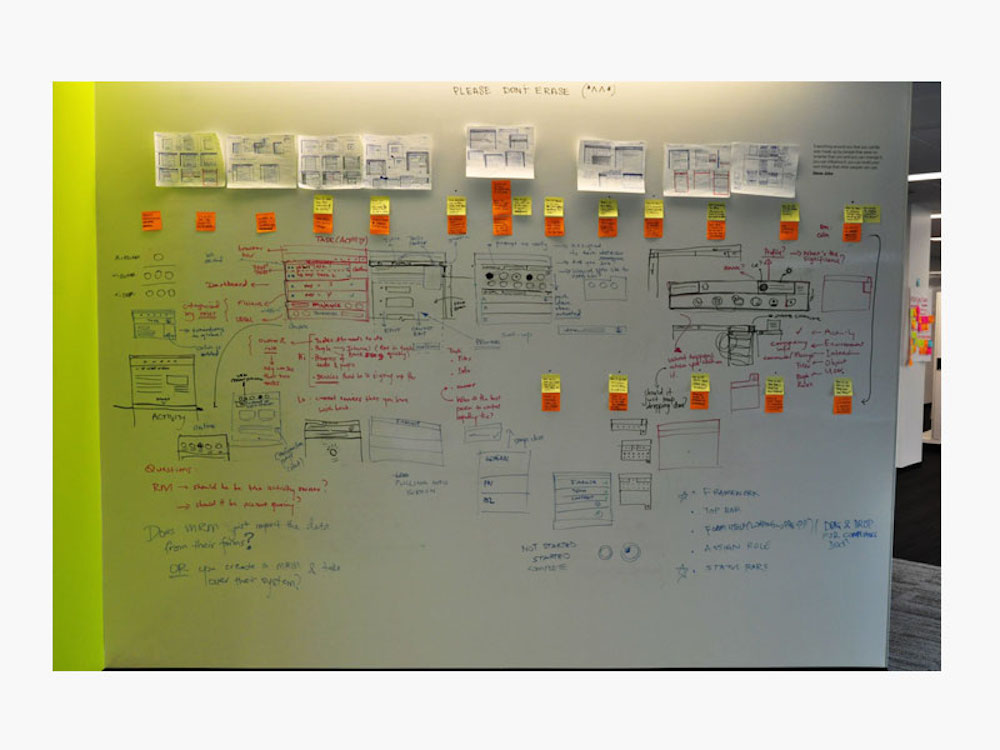
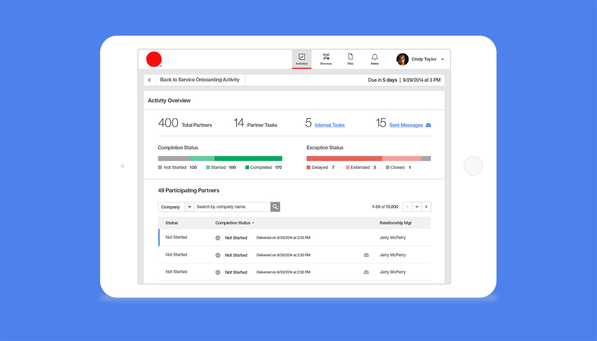

In 2013, I spent a year and a half as the design lead on Partner Engagement Manager or PEM. This was my first incursion as a design lead and worked closely with the engineering and product management teams. The team’s goal was to design a new product that would nurture partner relationships and build trust.
PEM, formally known as Multi-enterprise Relationship Manager, is an application that manages the relationship among users through on-going partner engagement. Users are able to create and monitor the lifecycle of various different process and easily surface supplier information.
The team and I spent several weeks with our product managers, engineers, and customers to understand the product and align our vision. The biggest pain points included:
After we felt comfortable with the first set of information we summarized our data that included:
In the end, our objective for the product was to design a solution that was automated, faster, and less prone to manual errors. From there the team and I created moodboards, empathy maps, personas, storyboards, and current/future scenarios to help mold each experience and tailor them for the major focus points.
One of the most obvious changes that was addressed was the current dashboard. The current dashboard was a splash page that included text about the product and was in no way useful to any of the users. It didn’t include any information about the current activities, tasks, or trading partners that was vital for users to begin their workday. Users also complained about the lack of organization, hierarchy, and the overwhelming amount of dialogs to find anything.
Our goal was to incorporate a powerful search engine that would index all 52 criteria, give accurate results, and accelerate their workflow. This included major changes to the search engine that would display intelligent results, the ability to save a specific search, and display recent searches.

Our goal was to design a dashboard that was intuitive and accounted for on-going activities, assigned tasks, and a directory of trading partners. All while boosting the performance, partner engagement, and cohesiveness throughout the product.

During the early stages we knew that there was a big opportunity for change. We already had customer input about a “Dream Dashboard” and tried to include as many as possible. The team agreed that number of activities, tasks, and current trading partners was of huge importance. Some of the beginning mockups included the status of all the activities, the total number, different types, and some quick links to help navigate.
The feedback was positive overall, but some weaknesses were name of the activity could be very long and wouldn’t fit properly, especially in other languages. Another flaw was it didn’t include tasks or partner information. This proved to be vital to customers when it was removed so later iterations included them.

In the end, we went through several iterations with customers and concluded by displaying a set of tasks, their current trading partners, and the number of current activities they’ve created and assigned. Users can quickly see the number and time remaining for their tasks, the total number of groups, partners in those specific groups, and number of activities, the progress, and time remaining.
In all likelihood, we knew everything wouldn’t fit on the page, but we did satisfy many needs and most of the requirements that were placed.
The activity designer was designed to help create any type of campaign or business process for their users. To date, the activity designer was the most challenging problems I’ve come across. In the beta product, users had to create an activity by dragging and dropping certain flowchart pieces on the screen and linking them together. On average, it took our users 21 days to create an activity and this proved to be extremely cumbersome especially when most customers created activities with 100s of steps.

Our goal was the rethink the activity creation process, reduce manual labor, and accelerate the time to create an activity. This included more automated data, less ‘dragging and dropping’, and allowing the user to focus on the information they’re inputting rather than the bulky, tedious, interface.
We started by gathering all of the requirements and features. With so many requests from product management and engineering, the team and I needed to focus our design around the personas and customer input. Trouble ensued as we could not focus on set list of focal points because there were too many and customer input did not backup any data by the rest of the product team. Instead the team and I decided to target the activity designer as a whole instead of specific requirements and features.
The team wanted to create a simple process that allowed the user to duplicate sections and then easily update them to fit the rest of the activity. This would reduce the number of steps, clicks, and most importantly, the time. It took several iterations to finally feel comfortable with the experience that we designed, but we felt it was necessary considering the size and scalability of the activity designer. We also wanted to make it as automated as possible, so as users spend more time in the system, the more accurate the populated data would become.

Again the overall feedback was positive, but customers expressed the need for branching logic, templates, and a way to assign activities to their customers. At the end of the release, we listed these three features as the most important.
The final design included a more straight-forward and linear process. By empowering the users with automated data, templates, and no dragging and dropping, it became a much easier way to create an activity.
The video displays a bit the interaction for the product and was shown at the Smarter Commerce Summit 2014 in Tampa Bay, Florida. At that point in time, this was still a work in progress but it was great to hear customer feedback and show them the work that was being done.